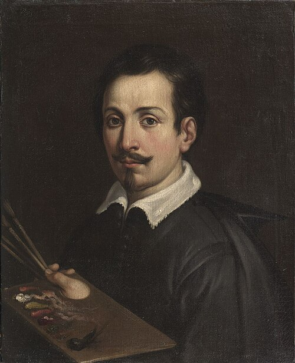

Bologna, 4 novembre 1575 – Bologna, 18 agosto 1642
Pittore bolognese, allievo dei Carracci
Guido Reni è stato un pittore e incisore italiano. Chiamato dai suoi contemporanei «divino Guido», è ritenuto uno dei massimi esponenti del classicismo seicentesco e tra i pittori più rappresentativi della scuola bolognese. Citato nei manoscritti di Oretti per opere conservate in palazzi nobiliari e case cittasdine.